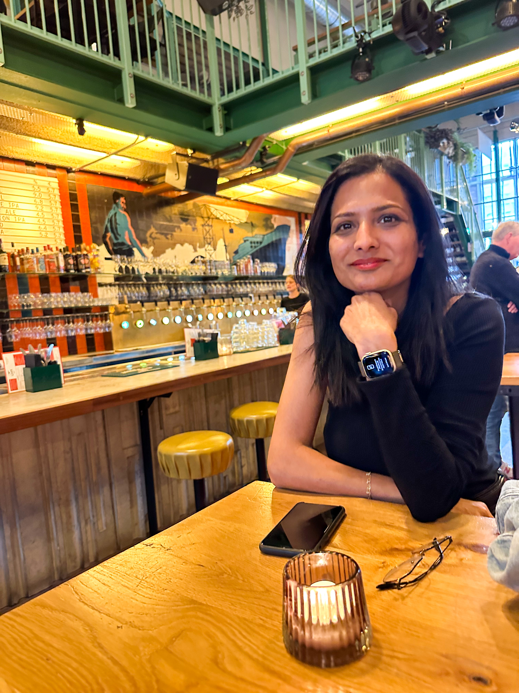

👋 Hello, I'm
Senior Software Developer & |
📍 Amsterdam, Netherlands · 14+ Years Experience
With over 14 years of diverse experience I've played multiple roles — Cloud Architect, GenAI Engineer, DevOps Engineer, Full Stack Developer, and Support Engineer — each one sharpening my ability to see the Bigger Picture.
I specialize in bridging the gap between technical complexity and business value. From designing disaster-recovery automation to building AI agent applications with Google ADK and Microsoft 365, I thrive where engineering meets innovation.

Driving IKEA's next-generation Automation Orchestration Platform and AI-driven capabilities for Fulfillment Units worldwide.
Built a one-click deployment platform enabling fast, secure, and repeatable cloud environment provisioning across Azure and AWS.
Built and deployed standardized microservices for enterprise banking systems at one of the world's largest banks.
Improved performance of legacy insurance applications and designed reusable UI components.
Built and optimized large-scale enterprise systems across data quality, finance, and internal workflow platforms.
Building GenAI solutions with Google ADK, Microsoft 365 Agent Toolkit, and Copilot Studio. Fine-tuning instructions and context management.
Multi-cloud architecture and deployments across GCP, Azure, and AWS — from serverless to Kubernetes-native solutions.
Writing production-grade Terraform modules and reusable GitHub workflow actions to standardize infrastructure and CI/CD at scale.
Full-stack engineering with TypeScript/JavaScript, Python, and Java. API design, event-driven systems, and distributed architectures.
API design and security using OAuth2, Azure AD, and Microsoft Graph API. Solution architect with a security-first mindset.
BigQuery analytics, LLM-powered insights, monitoring pipelines (SignalFx, iLert, Solace) for full operational visibility.
Whether it's a project, collaboration, or just a chat — I'm always open.